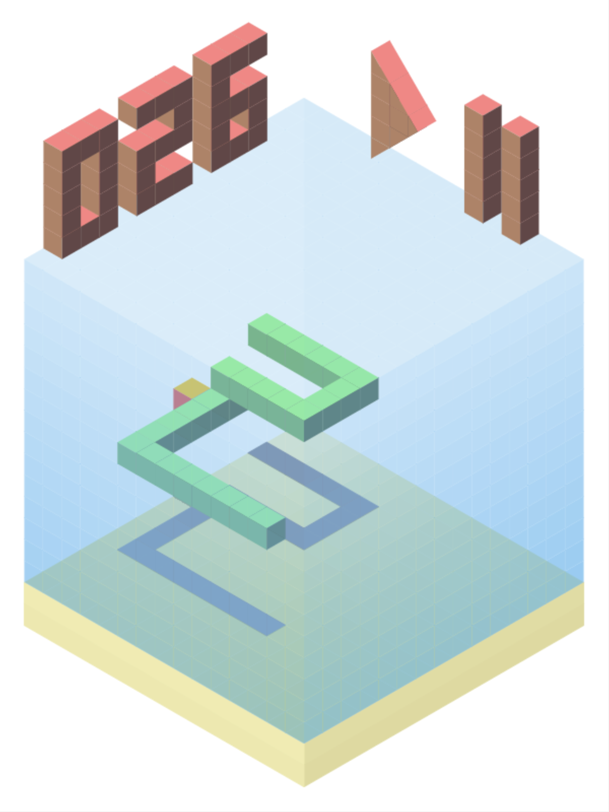
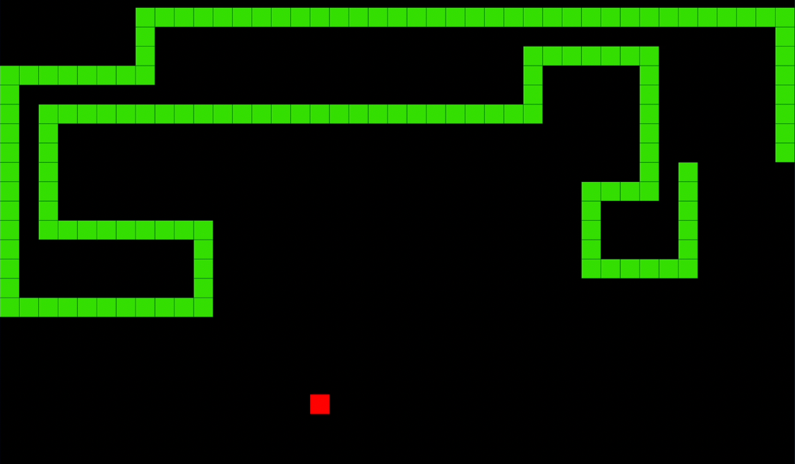
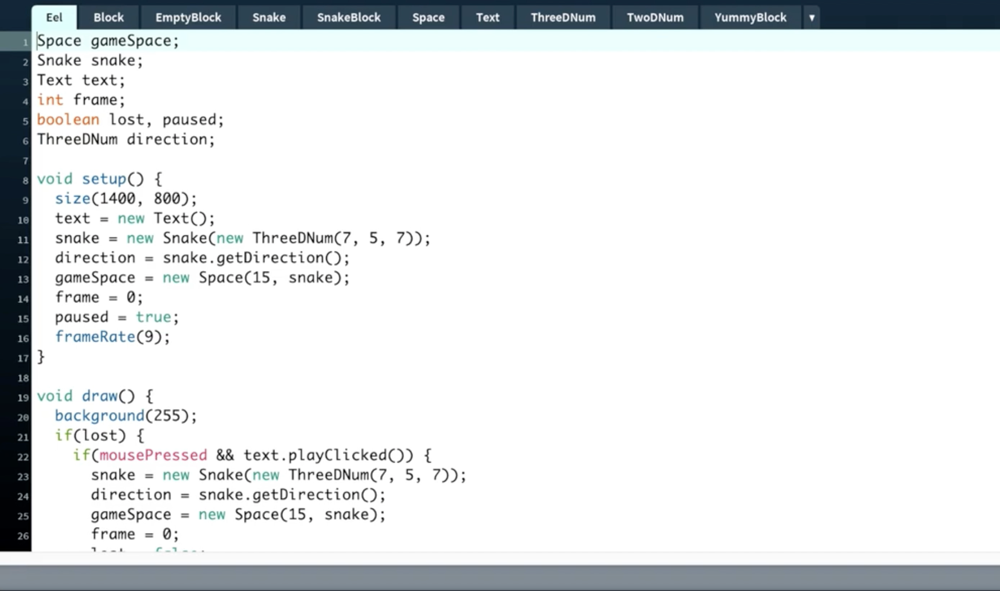
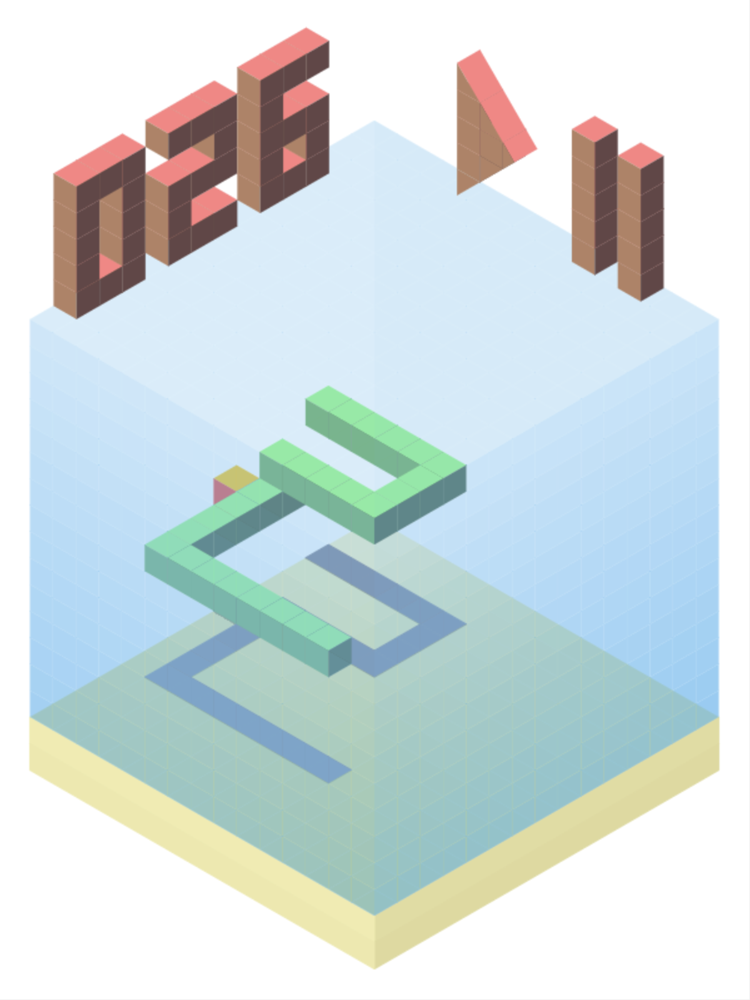
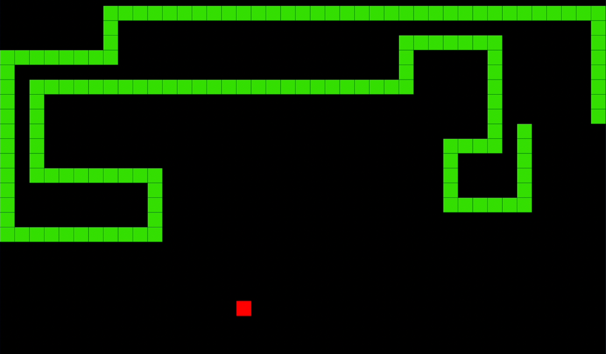
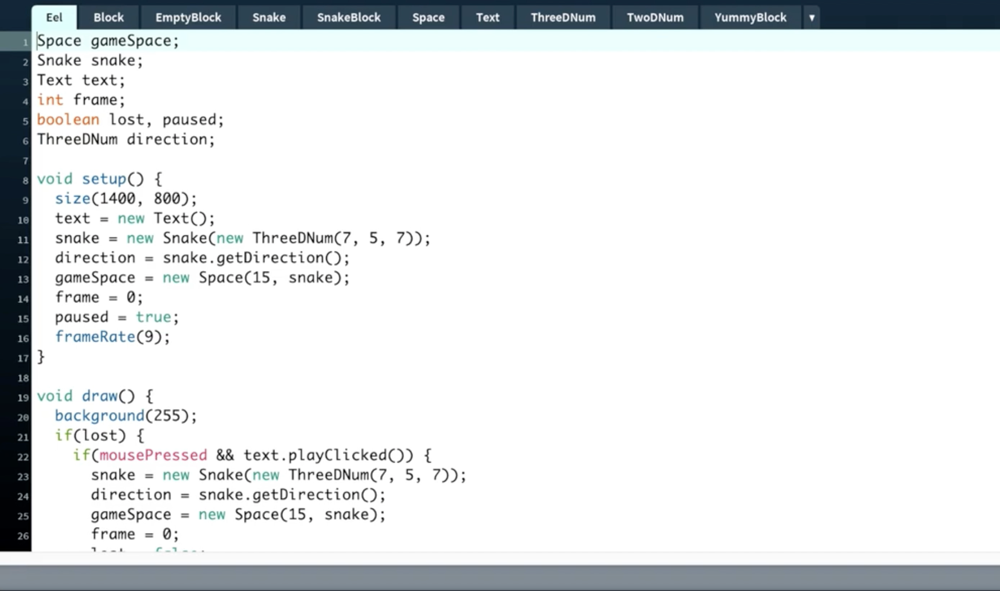

Eel
Web Game
2018
Eel is a 3D version of the classic Snake game. I wrote it when I was learning object-oriented programming. I first wrote it in Java, using the Processing library, then rewrote it in P5JS for the web.
 





You can try the game here. The controls can be a bit confusing at first. W & S go up and down, Q & D go along one horizontal axis, and A & E go along the other.